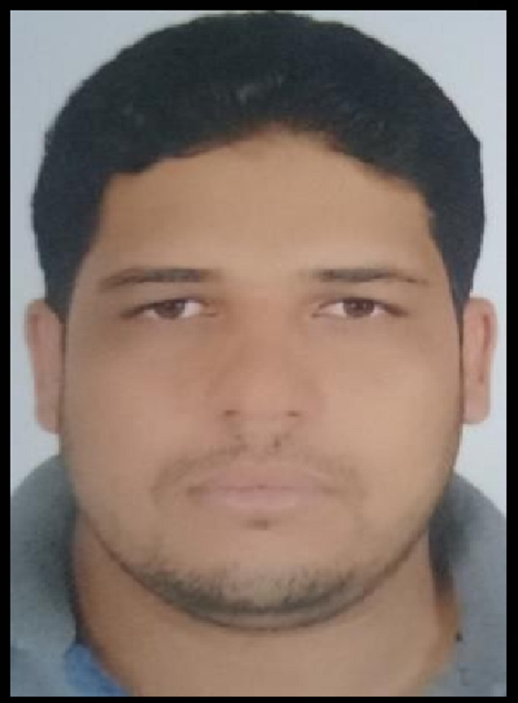

- Nom : Bajadi
- PRENOM : Abdelhamid
- ADRESSE : Agdez Zagora
- TELEPHONE : +212662832904
Etudient en master spécialisé sciences géomatique appliquées à la gestion des ressources naturelles et environnementales, FPT Taroudant
Mes expériences
- 2013 - Aujourd’hui: Géologue à CTT bouazzer Groupe MANAGEM
- Suivi journalier des chantiers en terme contrôle de la teneur et planification
- Réalisation des cartes, levés et coupes géologiques
- Rédaction des rapports d'activité journaliers, Hebdomadaires et mensuels
- Estimation des ressources à exploiter
- Élaboration des levés structuraux pour formuler un plan de soutènement adéquat
- Suivi des machines de sondages carottés et percutants en surface et au fond
- Collecter les mesures de déviations des sondages carottés et faire la correction
- Gestion d'équipe au sein du chantier et animation des sous-comités de sécurité et
Environnement
- 2012: Stage au sein d’OCP benguerir (1mois)
- Suivi des trous de forage pour atteindre la couche phosphatée
- Contrôle de la teneur via un échantillonnage systématique
- Suivi des échantillons jusqu’à l’arrivé au laboratoire
- Récolte des analyses et les regrouper sous format Excel
- Réalisation d’un rapport final.
Mes compétences
- Réalisation des cartes géologiques, les Coupes géologiques et les plans des travaux réalisés et à réaliser à une échelle approprié à l’aide du logiciel:, Google Earth, Surfer ; Autocad…
- Office Microsoft
- ArcGis,Google Earth
- Applications de dessin assiste par ordinateur, dessin de bâtiment et réalisation des plans à une échelle appropriée à l’aide du logiciel AUTOCAD.
- ARCGIS ;ERDAS
Mes formations
- 2011-2012: :Licence sciences et techniques Géologie Appliquée aux Ressources Minières à la faculté des Sciences et Techniques de Marrakech
- 2008-2011: :Diplôme d’Etudes en Sciences et Techniques (DEUST), filière Géologie Appliquée aux Ressources Minières à la faculté des Sciences et Techniques de Marrakech
- 2007-2008: : :Baccalauréat en sciences de la Vie et de la Terre